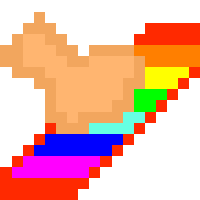

| Entities | Items | Recipes | Magics |
|---|
Rudder

|
|
Ruddercol7f7f7fUnderia |
RUDDER is a material with id #685. Its rarity value is 10(Mythic).It is craftable and involves further crafting recipes.
It involves as a material of Karmic Trail Boots.
As Material For:
 Karmic Trail Boots 因果循迹重靴*1 |
 Corrupt Boots 腐蚀靴子*1 |
 Ultradense Shield 致密盾牌*1 |
 Time Shackle 时间束缚*1 |
 Magic Anklet 魔法脚镯*1 |
Rudder 舵*1 |
 Mysterious Ingot 神秘锭*99 |
 MY Soul 我的灵魂*1 |
 The Final Ingot 终焉锭*5 |